I got my start as a Graphic Artist Assistant in the Graphic Design department of Florida State University’s Physics department, creating and recreating graphs, diagrams, and technical illustrations for publications. It was an early introduction to translating complex information into clear, visually accessible communication.
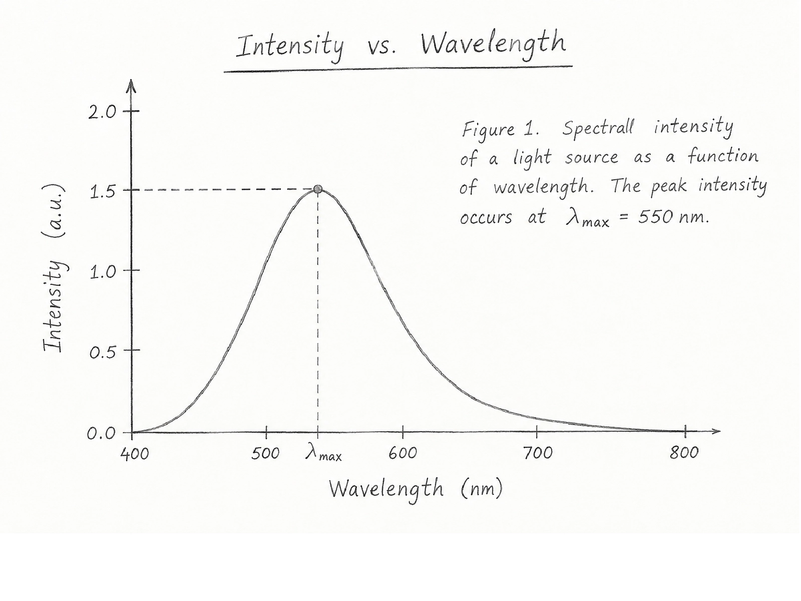
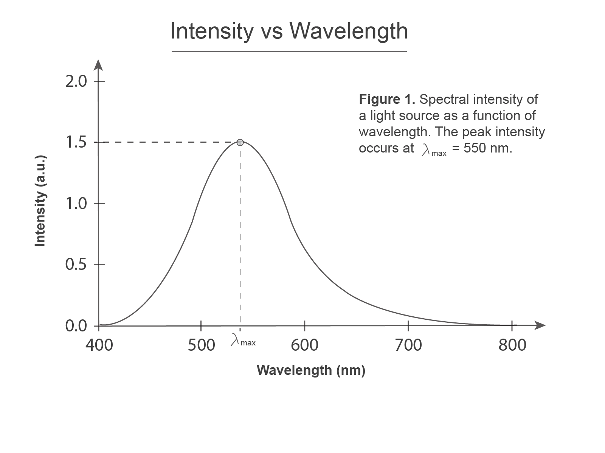
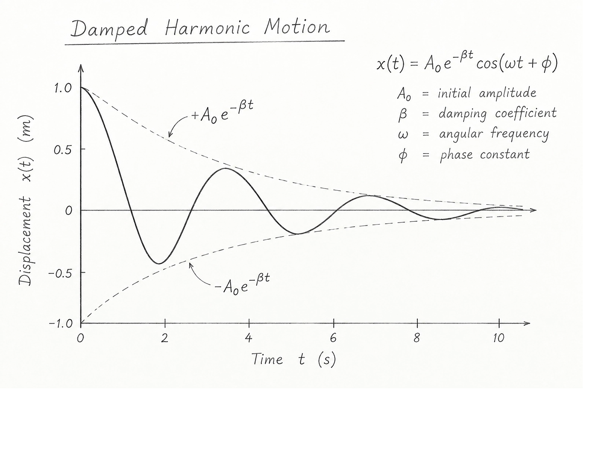
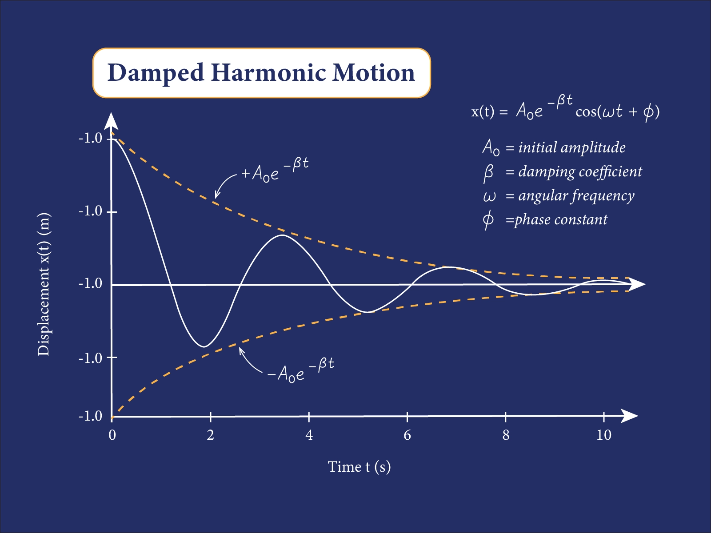
A strong identity is more than a logo. These branding projects explore how a visual identity translates across different formats and environments—from business cards and billboards to digital landing pages—while maintaining a consistent and recognizable brand presence.
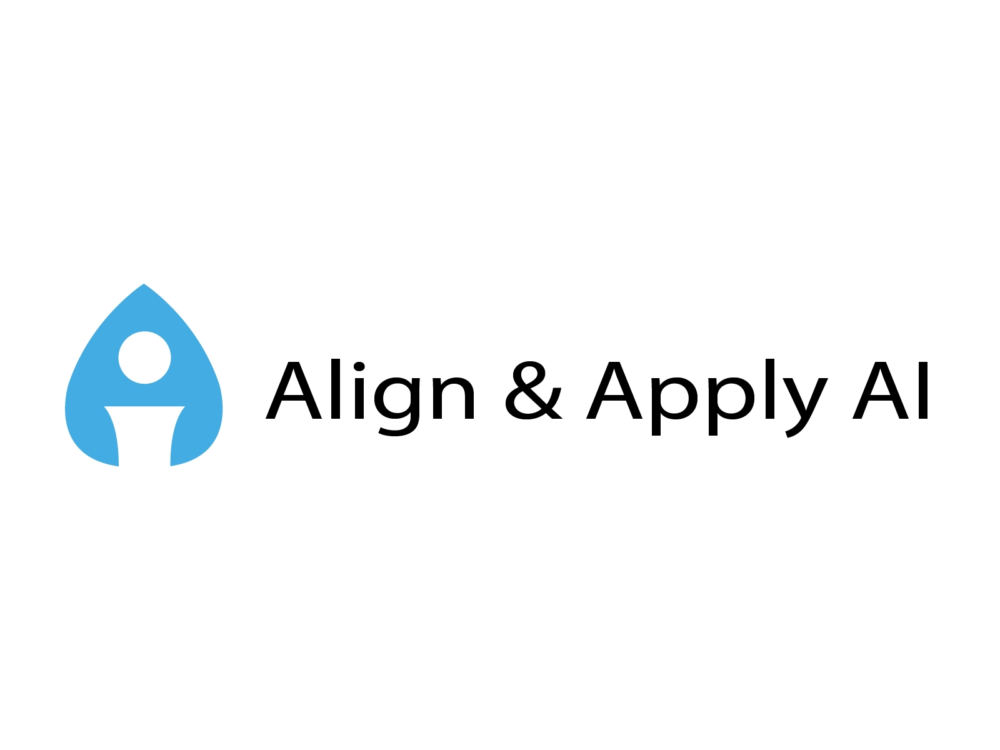
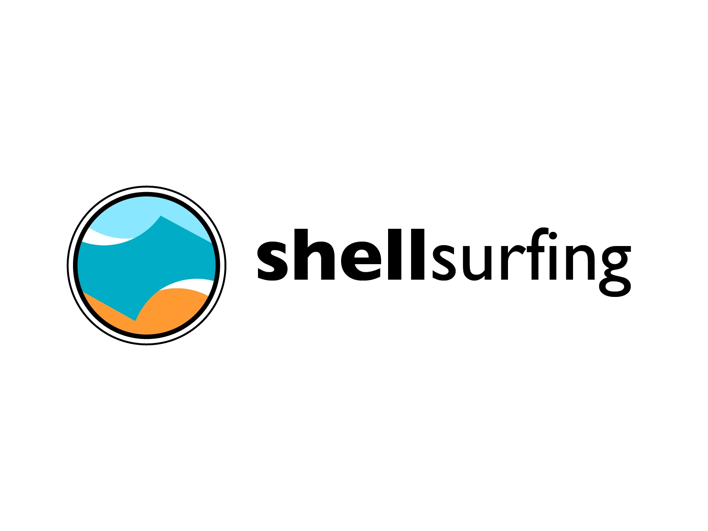
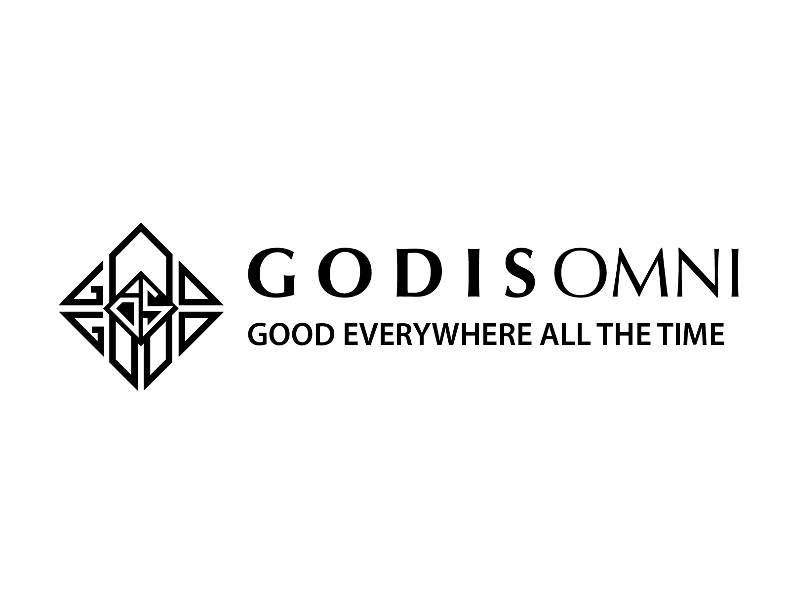
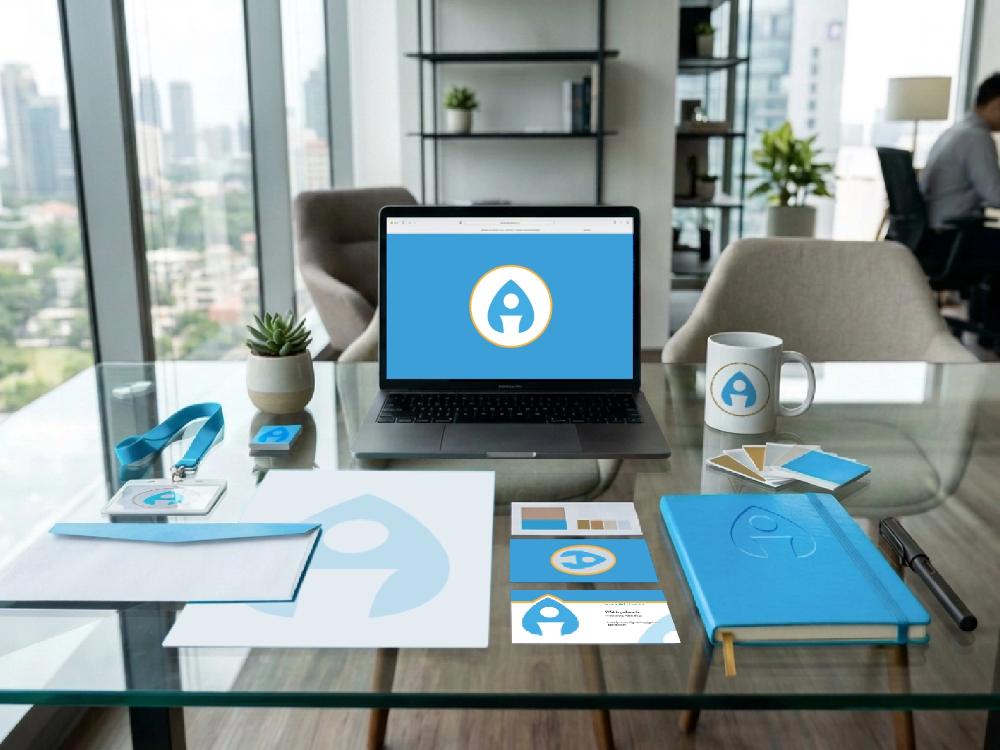
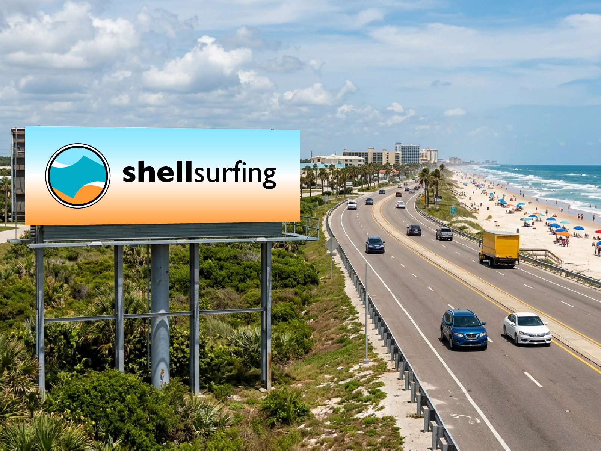
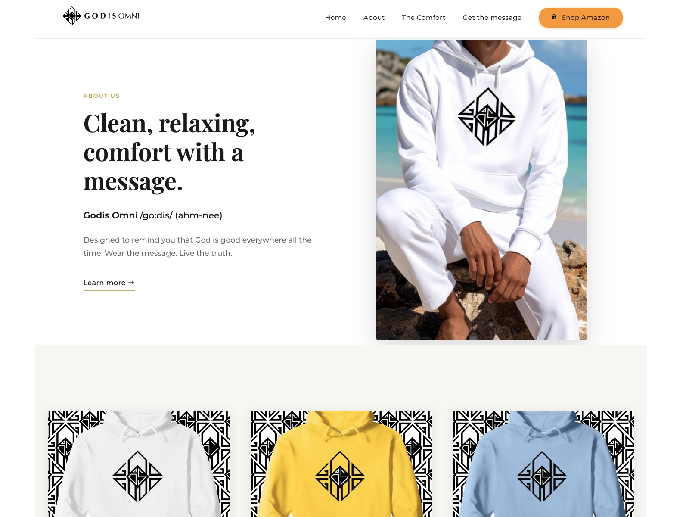
These advertising concepts explore how typography, imagery, hierarchy, and composition can work together to communicate a message and create a distinct visual experience. The projects span a luxury sports car and a real estate welcome-home campaign—demonstrating how design choices can shift with the brand, audience, and purpose.
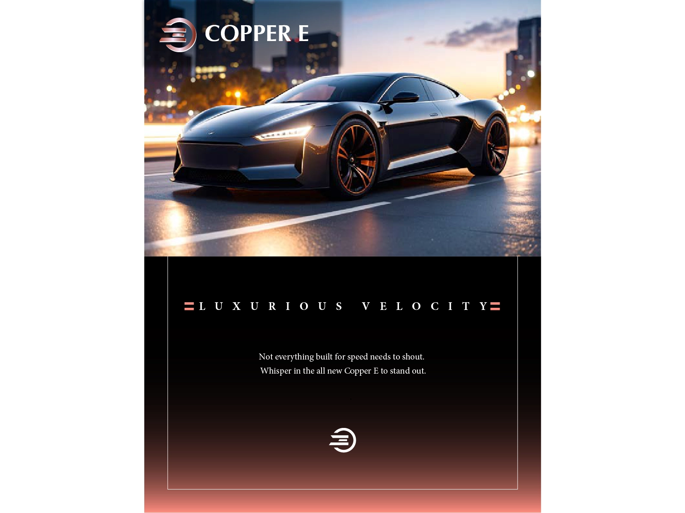
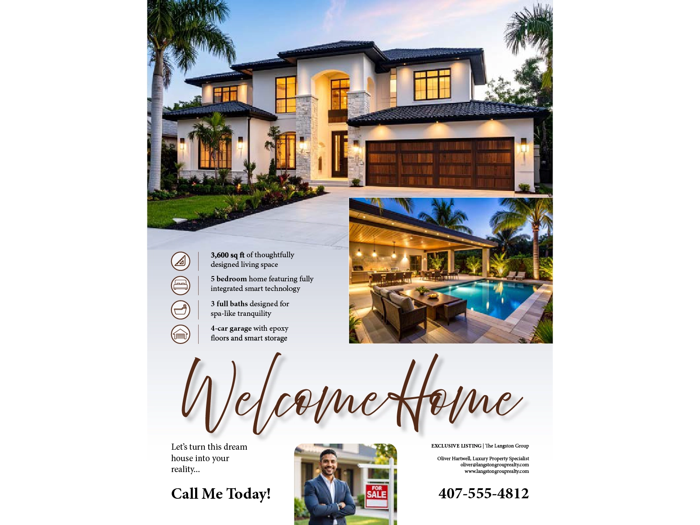
These digital campaign concepts explore how a visual identity can translate across digital advertising formats and platforms. Five layouts for two distinct brands demonstrate how composition, messaging, and visual hierarchy can be adapted to different dimensions and audiences while maintaining a cohesive brand presence.
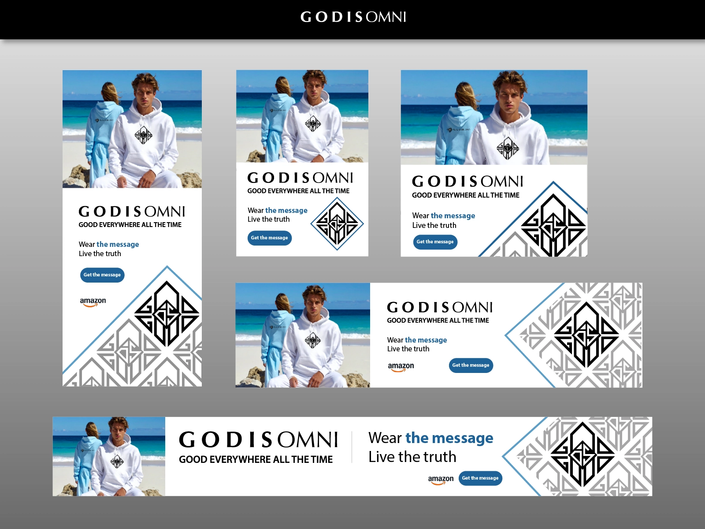
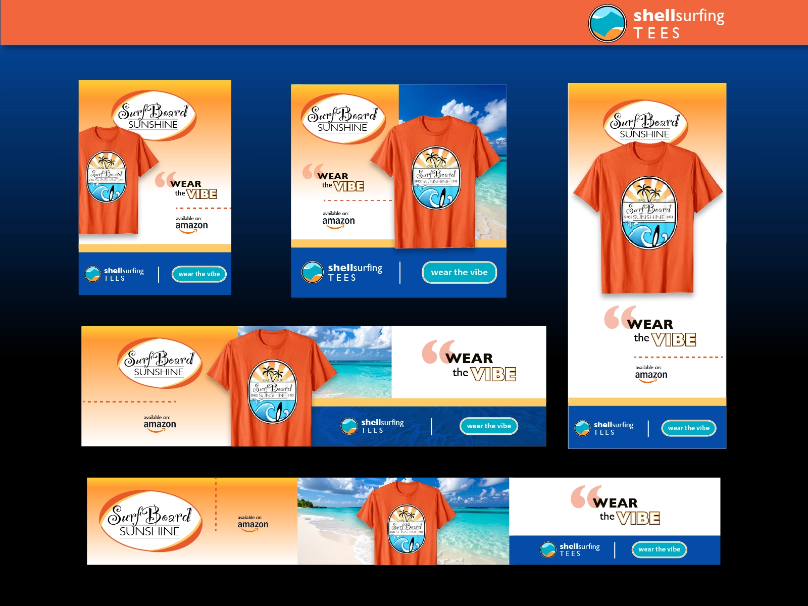
Roles and training plotted side by side, in order, to show where design, teaching, documentation, and systems work overlapped along the way.